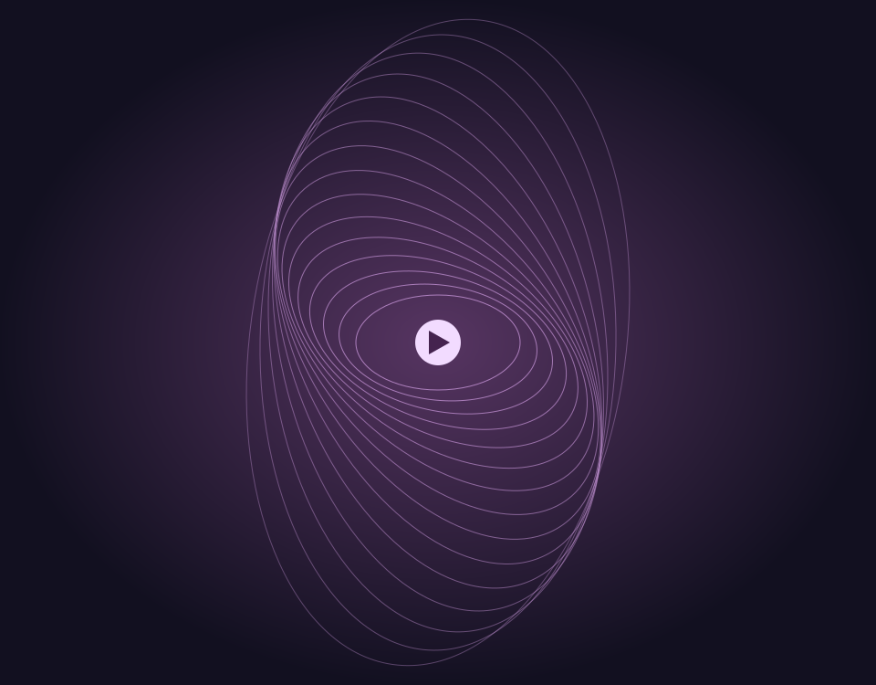
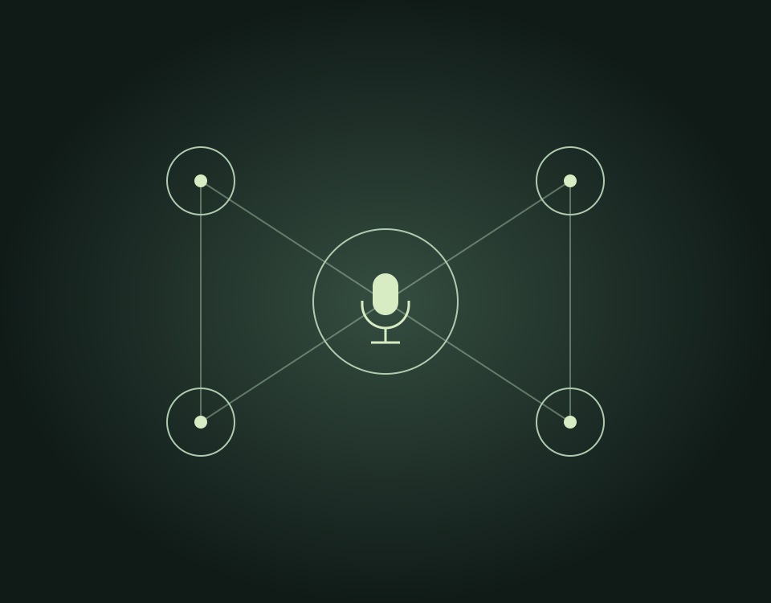

Applied AI · Python & Rust backends · Music technology
Lima, Peru · Remote across US & European time zones · Open to sponsored relocation
Production · AI Engineer
Preauth / Victoria
Production voice/text agents, AWS reporting and evidence-grounded LLM evaluation.
Deployed · Invite-only beta
Promptlist
Conversational Spotify playlists from your own library. Built in Rust with durable AWS jobs and private account storage.

Deployed · Private trial
Resonant
Natural-language music discovery, explainable playlists and private progressive DJ mixes.
Infinite Music AI
MusicGen fine-tuning, audio-text data pipelines and a demo opened to 100+ users

Active development · Local prototype
Nash Life Manager
Voice-first agents, persistent memory and scheduling with explicit approval.
MindTech
Diffusion models for audio synthesis using spectrogram representations
MIT CBMM
Computational models of visual perception and scene classification
Multispectral Imaging
Custom imaging system for fruit maturity classification using ML
Remote Sensing
Satellite image processing to quantify deforestation in the Peruvian Amazon
Nash Equilibrium
Experimental electronic music exploring structure, rhythm, and transformation